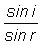
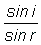
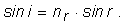
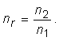
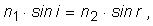

Provocarea 1
Provocarea 1
Găseşte regula care generează acest set de valori!
Un experiment de refracţie pe faţa plană a unui semicilindru de sticlă a condus la setul de date din tabelul 1.
Tabelul 1. Valorile funcţiilor sinus ale unghiurilor de incidenţă şi refracţie.
| sin i | sin r |
| 0,10 | 0,07 |
| 0,20 | 0,14 |
| 0,30 | 0,20 |
| 0,40 | 0,27 |
| 0,50 | 0,33 |
| 0,60 | 0,40 |
| 0,70 | 0,48 |
| 0,80 | 0,56 |
| 0,90 | 0,60 |
Probabil ai obţinut şi tu un set de date asemănător.
Provocarea 1
Găseşte regula care generează acest set de valori!
Poţi remarca uşor că, pentru valori mai mari ale lui sin i, corespund valori mai mari ale lui sin r.
În aceste condiţii, raportul  are şanse să fie constant.
Dacă ar fi aşa, am avea o regulă simplă, cu ajutorul căreia am putea afla valoarea lui sin r pentru oricare valoare a lui sin i!
Tabelul 2 prezintă valorile calculate ale acestui raport, rotunjite la primele două zecimale.
Tabelul 2. Raportul valorilor funcţiilor sinus ale unghiurilor de incidenţă şi refracţie.
| sin i | sin r |  |
| 0,10 | 0,07 | 1,43 |
| 0,20 | 0,14 | 1,43 |
| 0,30 | 0,20 | 1,50 |
| 0,40 | 0,27 | 1,48 |
| 0,50 | 0,33 | 1,52 |
| 0,60 | 0,40 | 1,50 |
| 0,70 | 0,48 | 1,46 |
| 0,80 | 0,56 | 1,43 |
| 0,90 | 0,60 | 1,50 |
Raportul sinusurilor este aproape constant, având valoarea medie 1,47. Abaterile sunt de doar 4...5 procente în plus sau în minus.
 Activitatea experimentală 1
Activitatea experimentală 1
Prelucreaza datele obţinute de tine în cazul refracţiei luminii pe semicilindrul de sticlă şi încearcă să formulezi legile refracţiei, după modelul reflexiei.

Prima lege a refracţiei luminii: Raza incidentă, normala la suprafaţă în punctul de incidenţă şi raza refractată sunt în acelaşi plan. (figura 1)
 Legile refracţiei luminii.
Legile refracţiei luminii.Ai remarcat aceasta când ai trimis lumina razant la suprafaţa foii şi ai observat dârele de lumină incidentă şi refractată, ambele fiind în planul foii.
A doua lege a refracţiei luminii (legea lui Snell): Sinusul unghiului de incidenţă este direct proporţional cu sinusul unghiului de refracţie (figura 1):

Coeficientul de proporţionalitate nr este numit indice de refracţie relativ al celor două medii.
Pentru datele din tabelul 2, indicele de refracţie relativ al sticlei faţă de aer este 1,47.
Provocarea 2
Cât este indicele de refracţie relativ al sticlei faţă de aer, în cazul măsurătorilor tale?
Numim indice de refracţie (absolut) al unui mediu, indicele de refracţie relativ al acelui mediu faţă de vid.
Raportul indicilor de refracţie ai celor două medii este chiar indicele de refracţie relativ al mediului "2" faţă de mediul "1":

Tabelul 3 prezintă indicii de refracţie ai câtorva medii, pentru lumină galbenă. Pentru alte culori, de la roşu la violet, indicele de refracţie în general creşte cu câteva procente. Fenomenul este numit dispersia luminii.
Tabelul 3. Indici de refracţie pentru lumina galbenă.
| Mediul | Indice de refracţie |
| vid | exact 1 |
| aer | 1,0003 |
| gheaţă | 1,309 |
| apă | 1,333 |
| alcool etilic | 1,362 |
| sticlă (diferite sorturi) | 1,46...1,96 |
| glicerină | 1,473 |
| polistiren | 1,591 |
| diamant | 2,417 |
Indicele de refracţie al aerului este practic egal cu unitatea.
Activitatea experimentală 2
Proiectează şi realizează un experiment prin care să determini indicele de refracţie al apei.
Compara valoarea obţinută de tine cu cea prezentată în tabelul 3.
Folosind indicii de refracţie, cea de−a doua lege a refracţiei poate fi scrisă astfel:

unde i este unghiul de incidenţă în mediul cu indice de refracţie n1, iar r este unghiul de refracţie în mediul cu indice de refracţie n2.
Acum te poţi folosi de aceste legi pentru a afla dinainte drumul luminii care se refractă pe suprafaţa unui corp transparent, oricare ar fi unghiul de incidenţă!